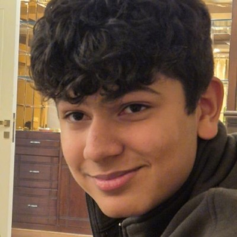

Aryaman Chandra — Curious about why anything works at all.

Hey, I'm Aryaman.
This portfolio is a collection of my research, projects, writing, and the ideas that have shaped them.
I began programming in the sixth grade in 2020. Shortly afterwards, I fell in love with mathematics, and since then I've been building things at the intersection of the two. Along the way, I spent countless hours every week under the tutelage of Dr. Saugata Ghosh, whose guidance helped shape my early understanding of mathematics. That experience also made me appreciate how transformative good teaching can be, and it sparked my interest in making high-quality mathematics education more accessible through technology. Since then, I've been working a lot in education equity.
Whatever I've been able to accomplish so far is as much a reflection of the people who've supported me as it is of my own efforts. I'm deeply grateful to my parents, sister, grandparents, teachers, and the many mentors who've guided me along the way.
My thinking has been shaped by people such as Richard Feynman, I. I. Rabi, Freeman Dyson, Steve Jobs, Peter Thiel, and Elon Musk, among many others. I also enjoy reading, particularly biographies, history, and books that explore the intersection of science, technology, and philosophy.
I enjoy building across disciplines and am comfortable working with Python, C++, Java, HTML/CSS/JavaScript, Verilog, Julia, and the Wolfram Language. Beyond programming, I like writing about mathematics, literature, and the unexpected paths that connect them.
Research has become one of the most rewarding parts of my journey. Much of my original work has been carried out in collaboration with Dr. Sudhir Ranjan Jain, an experience for which I remain immensely grateful. Working with him taught me not only mathematics, but also how to approach difficult problems with patience, rigor, and intellectual curiosity.